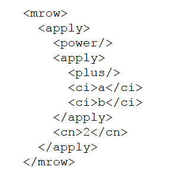
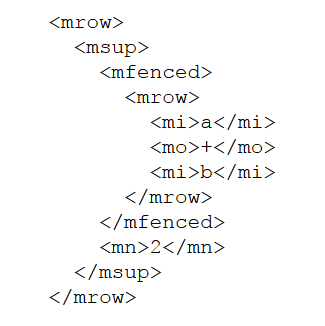

MathML
Hva er MathML?
MathML er et Mark-up Language som er spesifikt laget for bruk i matematiske og vitenskapelige sammenhenger. Det er en måte å kode matematiske formler på.
MathML kan skrives på to måter. C-MathML (Content) og P-MathML (Presentation), altså innhold og presentasjon.
For eksempel
Dette kan skrives på to måter. Bildet til venstre viser Innholds-metoden, mens bildet til høyre viser Presentasjonen.
 